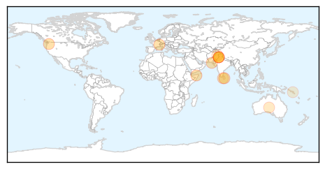
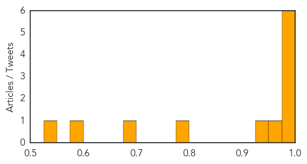
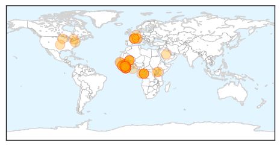

Dengue Fever
30-Day Web Trend
2 alerts, 0 warnings

30-Day Twitter Trend
1 alerts, 0 warnings

Article Locations
Article Confidences
Top Articles:
- 0.995
- 50% world population at risk of vector-borne diseases
- 0.994
- Steps to curb vector-borne diseases sought
- 0.993
- Half the population of the Americas is at risk of diseases carried by small insects - World
- 0.986
- The Island
- 0.984
- Preventive measures urged to control vector-borne diseases
- 0.979
- World Health Day event: ‘Preventative strategy needed for dengue virus’
- 0.974
- WHO urges Carib'n to take steps to prevent vector-borne diseases
- 0.946
- Call for steps to control vector-borne diseases
- 0.785
- Dengue to raise its ugly head again
- 0.687
- Solomon Islands: Fears for deadly outbreak of dengue fever in flood and quake hit Solomons
- 0.592
- District allied departments asked to take responsibility
- 0.534
- Fears for deadly outbreak of dengue fever in flood and quake hit Solomons - Solomon Islands
Top Tweets:
-
No tweets found for Apr 05, 2014
Ebola
30-Day Web Trend
16 alerts, 0 warnings

30-Day Twitter Trend
6 alerts, 0 warnings

Article Locations
Article Confidences
Top Articles:
- 1.000
- No Ebola outbreak in S. Sudan
- 1.000
- West Africa mobilises against Ebola epidemic
- 1.000
- Why ebola outbreak scares everybody
- 1.000
- Experts cast worried eye on Ebola spread
- 1.000
- the edge of knowledge
- 1.000
- the edge of knowledge
- 1.000
- Crowd attacks Ebola treatment center in Guinea
- 1.000
- Ebola spread to Guinea capital raises fears
- 1.000
- Ebola Outbreak in West Africa Worries Health Officials
- 1.000
- Panicked Mob Attacks Treatment Center, West Africa Deaths Top 90, Virus Spreads To Mali
- 1.000
- Ebola-hit Guinea calls for calm after attack on aid group
- 1.000
- West Africa mobilises against Ebola epidemic
- 1.000
- Saudi Arabia suspends issuing visas over ebola outbreak
- 1.000
- Growing Ebola epidemic in Guinea ignites crowd attacks
- 1.000
- Ebola toll tops 85 in West Africa
- 1.000
- West Africa gears up to fight Ebola, killer fevers
- 1.000
- Ebola deaths 'on the increase' in Liberia - News
- 1.000
- Crowd attacks Ebola treatment centre in Guinea
- 1.000
- Senegal shuts land border with Guinea to prevent Ebola spreading
- 1.000
- West Africa mobilises against Ebola
- 1.000
- Ebola virus disease, West Africa (Situation as of 5 April 2014) - Guinea
- 1.000
- W Africa gears up to fight Ebola
- 0.999
- Mob attacks Ebola treatment centre in Guinea, suspected cases reach Mali
- 0.999
- Three Ebola Virus Victims Lose Their Life in Mali
- 0.999
- Panic as deadly Ebola virus spreads across West Africa
- 0.999
- Ebola-hit Guinea calls for calm after attack on aid group
- 0.999
- Aid workers attacked by mob in Guinea
- 0.999
- Jamaica reggae star cancels Sierra Leone show over Ebola fears - News
- 0.999
- Ebola-hit Guinea calls for calm after crowd attacks aid group - News
- 0.999
- Liberia finds Ebola case unrelated to Guinea
- 0.998
- Mali reports suspected Ebola cases
- 0.998
- First Ebola cases suspected in Mali; regional death toll tops 90
- 0.998
- Ebola Virus Education Reaches Bole District Of Ghana
- 0.998
- Ebola death toll at 78; 'unprecedented epidemic'
- 0.998
- Angry Mob Attacks Medecins Sans Frontieres Ebola Treatment Centre in Guinea
- 0.998
- Mali suspects first Ebola cases as regional death toll tops 90
- 0.998
- Ebola virus in Guinea ‘most aggressive, near totally fatal’
- 0.998
- Doctors scrambling to contain Ebola outbreak in West Africa
- 0.998
- Mali suspects first Ebola cases as regional death toll tops 90
- 0.998
- Ebola Treatment Center Attacked by Crowd
- 0.998
- West African ebola outbreak raises alarm with spread to Mali
- 0.998
- Lassa Fever Carried From West Africa To Minnesota By Traveler
- 0.997
- Mob attacks Ebola treatment centre in Guinea as suspected cases reach Mali
- 0.997
- Ebola Center in Guinea Closed Because of Threats
- 0.997
- Mali identifies first possible cases of Ebola
- 0.996
- Minnesota patient has West African virus, search on for others exposed
- 0.996
- Three Suspected Cases Of Ebola In Mali
- 0.996
- Mob attacks Ebola treatment centre in Guinea, suspected cases reach Mali
- 0.995
- Mob Attacks Ebola Treatment Site in Guinea
- 0.991
- Ebola cases may have reached Mali
Showing top 50 articles...
Top Tweets:
-
No tweets found for Apr 05, 2014